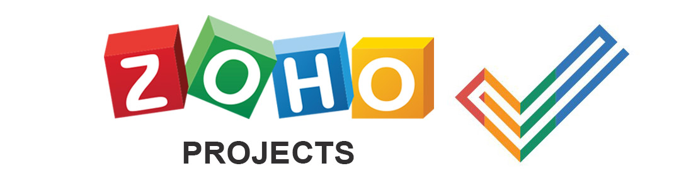

Zoho projects es un software para gestionar proyectos que permite una mejor comunicación entre los trabajadores de la empresa. Permite colaborar, crear y asignar tareas a otros trabajadores, realizar un seguimiento del trabajo realizado y llegar a tiempo a cada entrega.
Características de Zoho Projects:
- Planificar y coordinar proyectos.
- Crear y exportar informes y gráficos de Gantt.
- Calendario y reuniones.
- Integración de Dropbox.
- Realización de la facturación.
- Seguimiento.
- Acceso desde el móvil [3].
A continuación se muestra un videotutorial de la herramienta:
Videotutorial Zoho Project